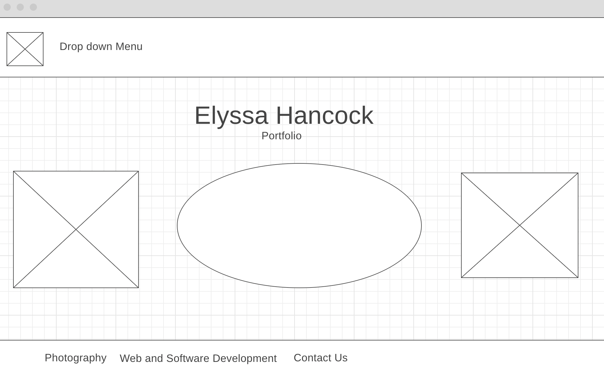

Overview
Purpose
The purpose of this site is to provide a reference of my work. I want to showcase what I know how to do and provide examples of it. I would like to include my work of websites, graphic design, and photography all in this website. Different pages for different skillsets would be ideal that way it was not distracting.
Audience
The audience of the website will be anyone that would benefit from seeing my work. This could include future employers, collegeas or teammates, or anyone else that is interested in what I have created.
Branding
Website Logo
Style Guide
Color Palette
Palette URL: https://coolors.co/396e94-e7c24f-a43312-381d2a-aabd8c| Primary | Secondary | Accent 1 | Accent 2 |
|---|---|---|---|
| [#223843] | [#EFF1F3] | [#D77A61] |
Typography
Heading Font: [Fruktur]
Paragraph Font: [Baloo-2]
Normal paragraph example
Colored paragraph example
Vistors will come to my site as opposed to other sites because the information is about me. My hope is that once seeing the website they will remain on it to see my work and be pleased with it.
Navigation
Site Map
Content
Home page
Welcome to my Portfolio. My name is Elyssa Hancock, I am a Software Engineering student. Here you will find some of the work I have created so far.
Images for the Home page


Photography
Here is some of my photography work. If you need pictures for your family, friends, or any event, please contact me.
Photography Images


Web and Software Development
Relevant Courses:
web fundementals
programming building blocks
intro to computing
Images for Web and Software Development

Wireframes
Create three wireframes for your site. One for each page and list them here
Home
[Any additional details about home that the wireframe does not make clear]
Photography
[Any additional details about page 2 that the wireframe does not make clear]
Web and Software Development
[Any additional details about page 3 that the wireframe does not make clear]